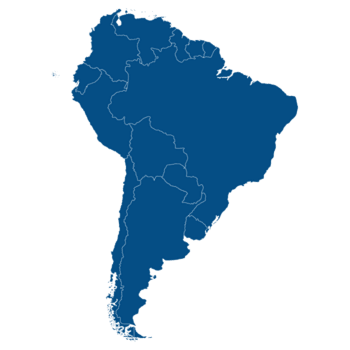
| Nome | Bandeira | História | População | Área |
|---|---|---|---|---|
| Argentina | 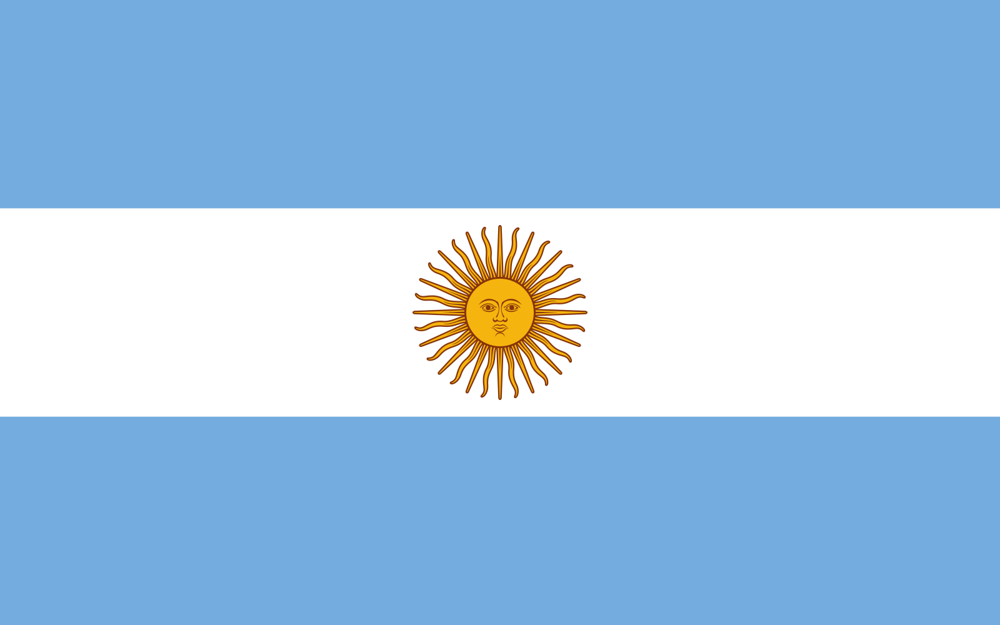 |
História | 46.003.734 | 2.736.690 km² |
| Bolívia | 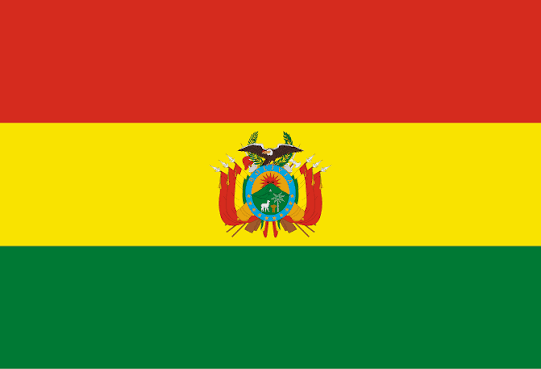 |
História | 12.749.291 | 1.083.300 km² |
| Brasil | 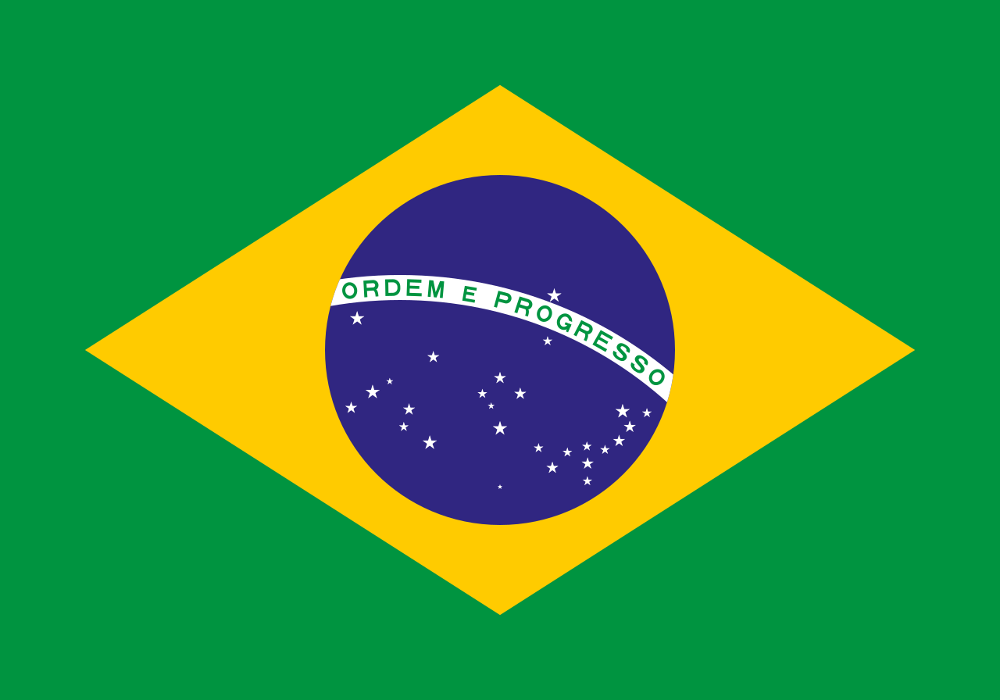 |
História | 213.562.666 | 8.358.140 km² |
| Chile | 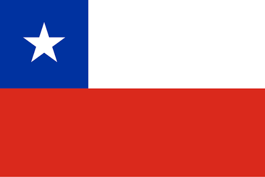 |
História | 19.945.850 | 743.532 km² |
| Colômbia | 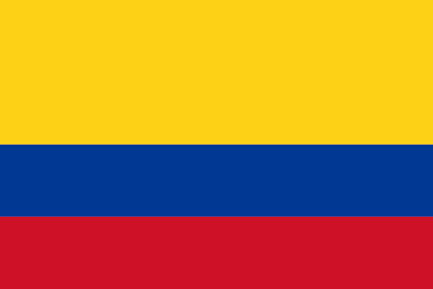 |
História | 53.936.226 | 1.109.500 km² |
| Equador | 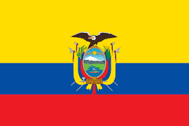 |
História | 18.444.506 | 248.360 km² |
| Guiana | 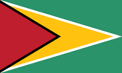 |
História | 840.890 | 196.850 km² |
| Paraguai | 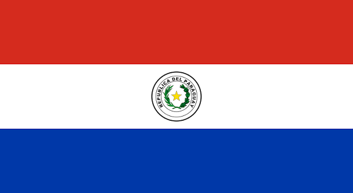 |
História | 7.095.279 | 397.300 km² |
| Peru | 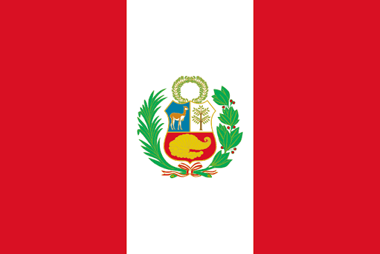 |
História | 34.922.148 | 1.280.000 km² |
| Suriname | 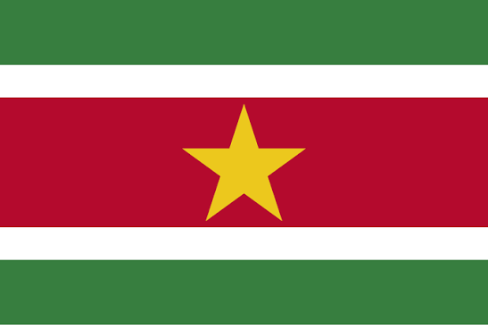 |
História | 645.256 | 156.000 km² |
| Uruguai | 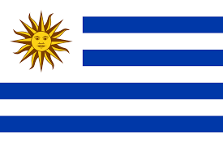 |
História | 3.382.537 | 175.020 km² |
| Venezuela | 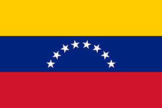 |
História | 28.633.711 | 882.050 km² |